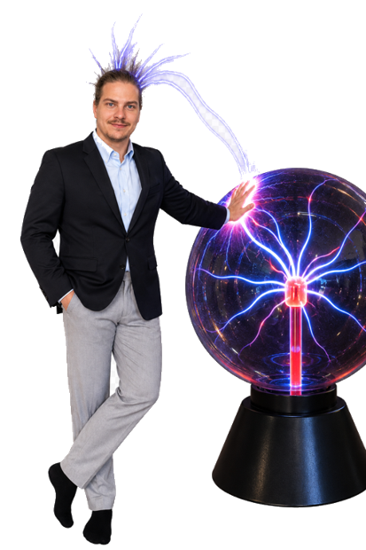

Sebastian Steffen · Bewerbung als Mitarbeiter Entwicklung und Didaktik (80%)
Keine Zeit? Direkt zum Ende springen.
Klick in die Mitte der anderen Räder, um ihre Drehrichtung zu ändern, bis alle sauber ineinandergreifen. Dann starte den Antrieb.
Fahr mit der Maus durch den Sand und zieh eine Rinne vom Eingang links bis zum Ausgang rechts. Sobald die Rinne durchgehend ist, findet das Wasser seinen Weg.
Noch keine Verbindung.
Das Wasser aus Station 2 sammelt sich oben, unten steht der Generator. Bring die drei Trichter dazwischen, dann läuft es von selbst.
0 von 4 Teilen platziert.
Der Generator läuft. Klick die drei Projekte an, danach geht es weiter.

Mechanik, Gruppen leiten, Prozessgestaltung, gebaute Projekte. Vier Teile, die bei mir zusammenhängen und zusammen das ergeben, was ihr als Multitalent sucht.